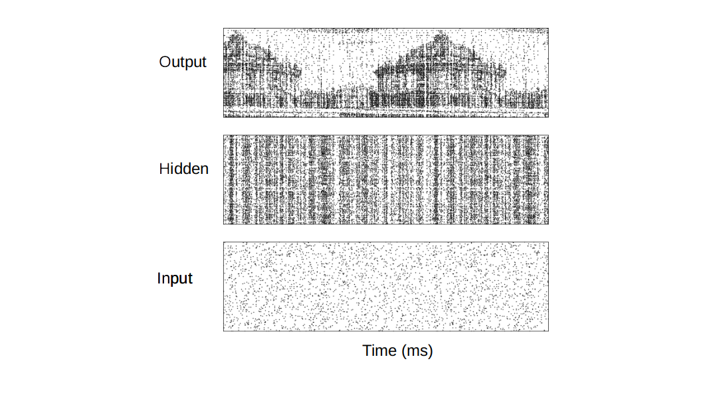

Bayar I.
Menzat
Background
Hello everyone! My name is Bayar and I've been studying Computational Neuroscience in the last 4 years as part of the Vogels LabVogels Lab . %The previous sentence will soon become redundant since this is what time does to most things said about the present. I'm a pretty helpful guy so always feel that you can drop me a line ( % mai ales daca intelegi ce e intre paranteze). In broad strokes my interest fall into what I said bellow, but that's not what I'm all % about. I also love languages and I like to see myself as a bit of a translator, I love to look for the meaning of words and such :) % My blog is right here if you're interested to see what I'm thinking about.
DPhil candidate Life Sciences Interface DTC, Oxford UniversityBSc Computer Science (A.I), University of Essex 1st
A link to my CV if you would like to have a look at it:
Bayar Menzat CV
Interests
- Computational Neuroscience ( understanding how inhibitory-STDP shapes plasticity in the brain; how gating works; sparse representations )
Current Research:
D. Phil research project in "Understanding olfactory associate learning in the fruit fly" in the group of Tim Vogels

Previously Completed projects
- I. Summer intern, researching gesture interfaces using the Microsoft Kinect in Simon Lucas's group at the University of Essex
- A gesture recognition library for the Kinect camera used to control games:
- Github code
simulation ii from Bayar Ilan on Vimeo.
simulation ii
from Bayar Ilan on Vimeo.Publications
-
1. Ehsan, Shoaib and Clark, Adrian F and Cheung, Wah M and Bais, Arjunsingh M and Menzat, Bayar I and Kanwal, Nadia and McDonald-Maier, Klaus D (2011)
Memory-Efficient Design Strategy for a Parallel Embedded Integral Image Computation Engine In: IMVIP 11Proceedings of the 2011 Irish Machine Vision and Image Processing Conference IEEE Computer Society, Washington DC, USA, pp. 107-108. ISBN 9780769546292 - Abstract: In embedded vision systems, parallel computation of the integral image presents several design challenges in terms of hardware resources, speed and power consumption. Although recursive equations significantly reduce the number of operations for computing the integral image, the required internal memory becomes prohibitively large for an embedded integral image computation engine for increasing image sizes. With the objective of achieving high-throughput with minimum hardware resources, this paper proposes a memory-efficient design strategy for a parallel embedded integral image computation engine. Results show that the design achieves nearly 35% reduction in memory for common HD video.
Would you like to ask me a question? Email me.